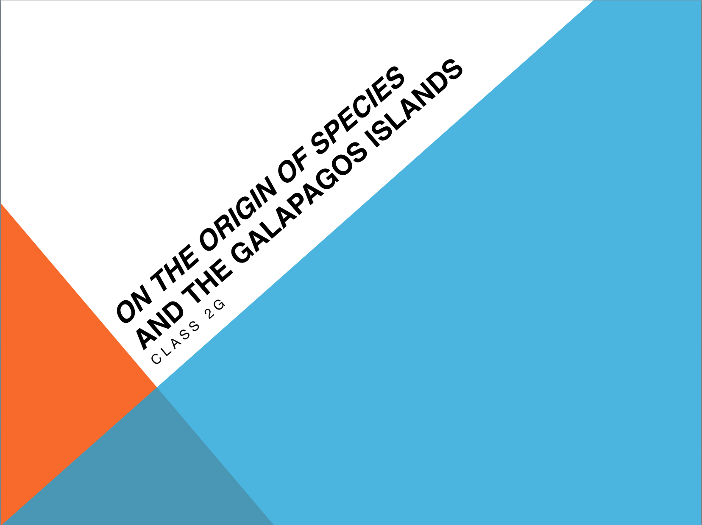
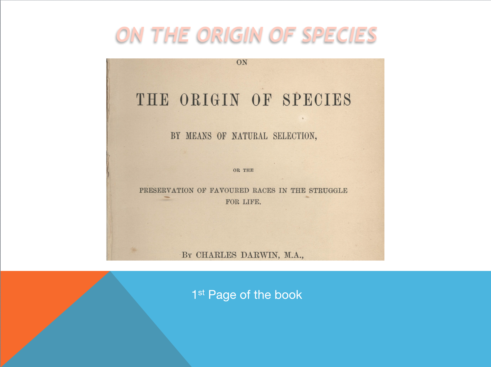
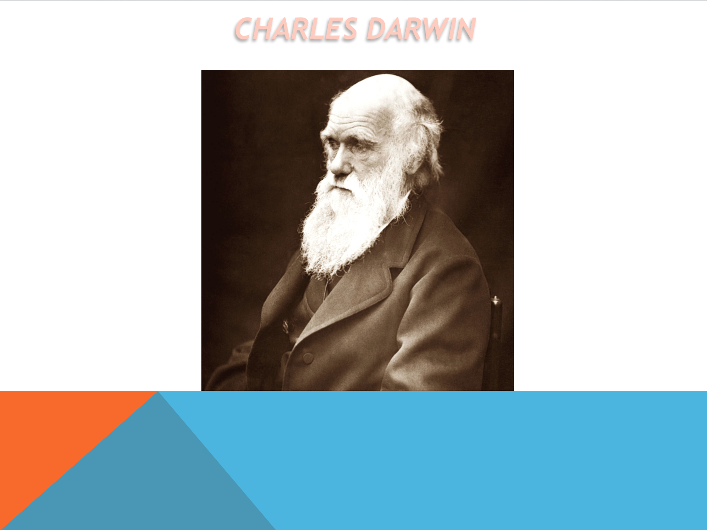
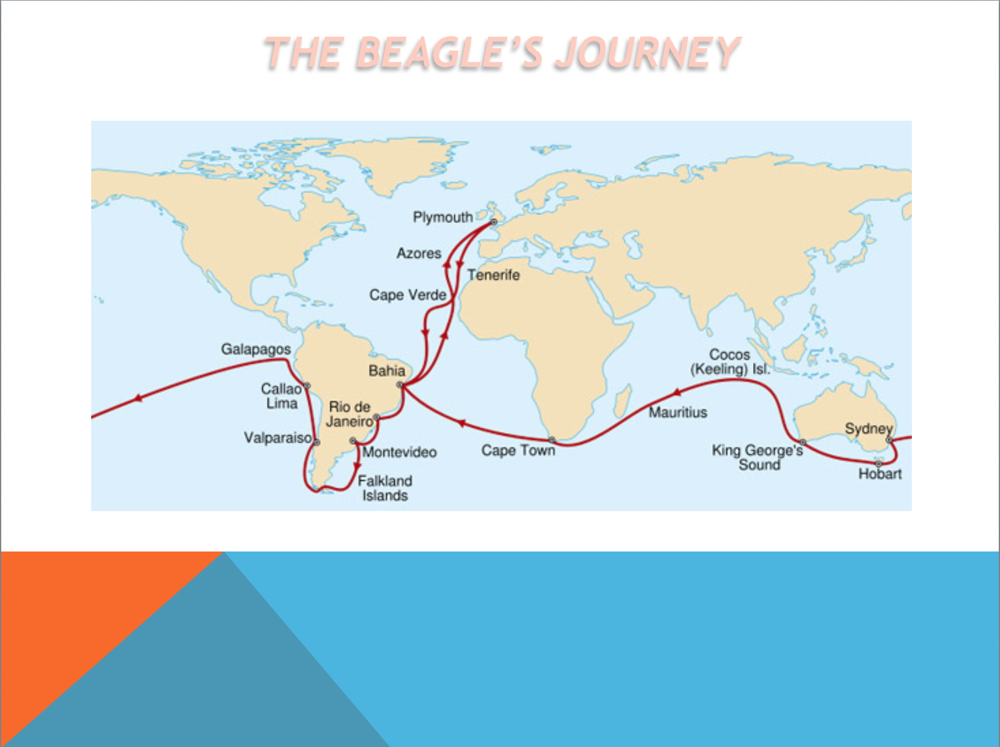
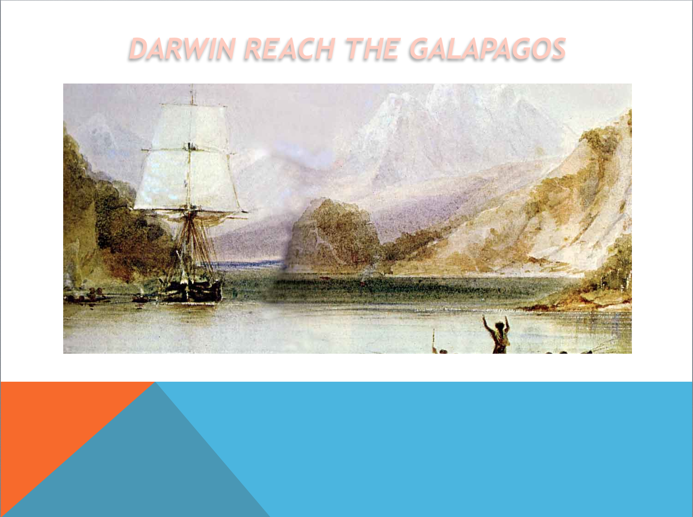
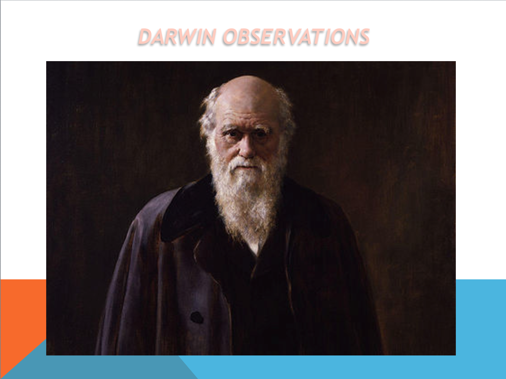

1.

2.

On the Origin of Species, written by Darwin, is a book that has changed the way human beings think and is undoubtedly the greatest work of the scientist. However, the journey that gave birth to his great work was also recorded as a travel journal in the publication commonly referred to as The Voyage of the Beagle.
3.

In 1831, the 22‐year‐old, recently graduated Charles Darwin joined Captain FitzRoy on the HMS Beagle as ship’s naturalist for a trip around the world. Instead of the planned 2 years, the voyage took nearly 5 years.
4.
For most of the 5 years, the Beagle surveyed the coast of South America leaving Darwin free to explore the continent and islands, including the Galapagos. He filled many notebooks with careful observations about animals, plants and geology.
5.

Darwin’s journey started from Playmouth,England. He visited a lot of places like Cape Verde Islands, Salvador (Brazil), Sidney, Cocos Island and the Galapagos Islands. Today we are going to focus and talk about the Galapagos Islands.
6.

Darwin reached the Galapagos on September 15, 1835 and he spent about five weeks, until October 20, studying the geology and biology of four of the islands. This stage was the most important of the journey because here Darwin started to work to his book, On the Origin of Species.
7.
The Galápagos Archipelago consists of 7,880km² of land spread over 45,000km² of ocean. The islands are located in the eastern Pacific Ocean, 973km off the west coast of South America. The closest land mass is in Ecuador, the country to which they belong, 926km to the east.
8.

His observations focused on 13 species of finches, all of which have adapted to their habitat. The size and shape of their reflect their specializations. Darwin noted the similarities and differences in his journal and organized the finches as part of his collection. His observations later brought him to conclude that flora and fauna evolve over time through a process of natural selection. Darwin spent the next 20 years of his life gathering supporting evidence and in 1859, he published the now famous On the Origin of Species.